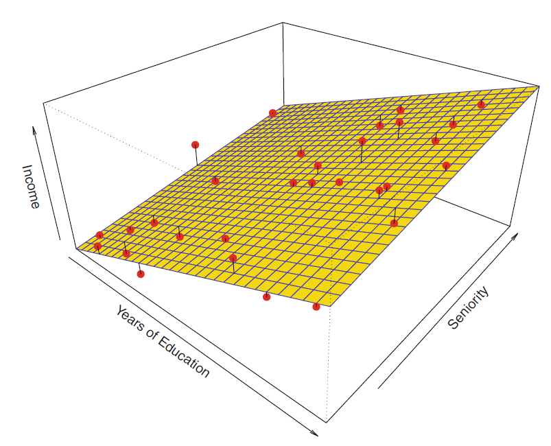

What is Machine Learning (ML)?
ML is not Artificial Intelligence (AI). It is in fact a sub-category of the AI universe. In simple terms, ML is defined as the process of providing the computer (i.e. the machine) with data for it to learn from, so that when presented with new and unseen data in the future, it can correctly predict a desirable response.
Notice the word ‘predict’ in bold here. Any ML task can be simply interpreted as a prediction problem.
E.g. 1. Given all the monthly sales metrics for a particular chips brand over the past 3 years, what is the predicted number of sales for next month?
E.g.2. Given a handwritten number, what digit is it (from 0 to 9)?
E.g.3. When an email appears in your inbox, should it be classified as spam, given information such as the addresses you have blocked, advertisement words like promotion or discount, etc.?
In statistical terms, ML describes the process below:
Given the input information X (also called predictors, (independent) variables, features) and output information Y (also called response or dependent variable), what is the function f that can help us arrive at Y from X, allowing for some random error?
\[Y = f(X) + \epsilon\]
X variables can be either quantitative or categorical, or a combination of both.
Y can be either quantitative or categorical but not both.
\(\epsilon\) is the random, irreducible error that we cannot control nor reduce.
The goal of ML is to estimate unknown function f that can help make use of the predictors X’s and produce future predictions about the response Y that we are interested in.
However, it is worth noting that no matter how well we try to model this function, it will always contain some error specified by \(\epsilon\) as defined above. So, what is the point of ML then, given that we can never get to the truth?
Consider the case where \(\hat{Y} = \hat{f}(X)\) is the predicted value of unknown response Y using the known predictors X and our estimated function f. Let’s also assume that \(f(X)\) and \(\hat{f}(X)\) are known. It follows that (see full derivation at the end of this post):
\[E(Y - \hat{Y}) = E[f(X) + \epsilon - \hat{f}(X)]^2 = [f(X) - \hat{f}(X)]^2 + Var(\epsilon) \space \space \space \space \space \space \space \space (1)\]
\[= Reducible \space Error + Irreducible \space Error\]
Where:
Reducible error is the squared difference between the actual value of Y, given by \(f(X)\) and the predicted value of Y, given by \(\hat{f}(X)\).
Irreducible error is the variance of the error term, \(Var(\epsilon)\).
Hence, ML aims to estimate function f such that the reducible error is minimised.
Parametric and Non-parametric Modeling:
To model the function f, we have two options:
- Parametric methods:
Make assumptions about the form of f (such as: linear, quadratic, piecewise polynomial, etc.).
Advantage: reduces the problem down to estimating a set of parameters.
Disadvantage: the assumed form of function might be incorrect, resulting in poor performance. This is the problem of high bias (to be discussed shortly).

Image credit: ISLR, page 22
- Non-parametric methods:
Make NO assumptions about the form of f. Instead, they try to find f that is as close to the data as possible but not perfectly close to avoid overfitting.
Advantage: highly flexible and can fit a wide range of shapes.
Disadvantage: Unlike parametric methods where the problem is reduced down to estimating only a set of parameters, non-parametric methods require a lot of data to accurately estimate an arbitrary f. Moreover, they are also more easily prone to high variance or overfitting (to be discussed shortly).
 Image credit: ISLR, page 24
Image credit: ISLR, page 24
I. Supervised and Unsupervised Learning:
Full derivation of (1):
\[E(Y - \hat{Y}) = E[f(X) + \epsilon - \hat{f}(X)]^2\]
Where \(f(X)\) and \(\hat{f}(X)\) are known and \(\epsilon\) is unknown.
We have that \(E(c) = c\) where \(c\) is a constant (i.e. is known).
\[E(Y - \hat{Y}) = E[f(X) + \epsilon - \hat{f}(X)]^2 = E[(f(X)-\hat{f}(X)) + \epsilon]^2\]
\[= E[f(X)-\hat{f}(X)]^2 + 2.E[f(X)-\hat{f}(X)].E(\epsilon) + E(\epsilon^2)\]
We also made the assumption that \(\epsilon\) is random, which is equivalent to \(\epsilon\) ~ \(WN(0, \sigma_\epsilon^2)\). Hence \(E(\epsilon)=0\).
\[=E[f(X)-\hat{f}(X)]^2 + E(\epsilon^2)\]
We have: $Var() = E(^2) - [E()]^2 = E(^2) $ because \(E(\epsilon) = 0\). And because \(f(X)\) and \(\hat{f}(X)\) are known constants:
\[= [f(X) - \hat{f}(X)]^2 + Var(\epsilon)\]